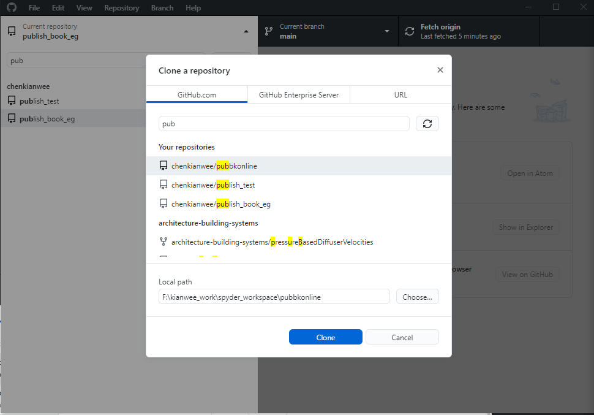
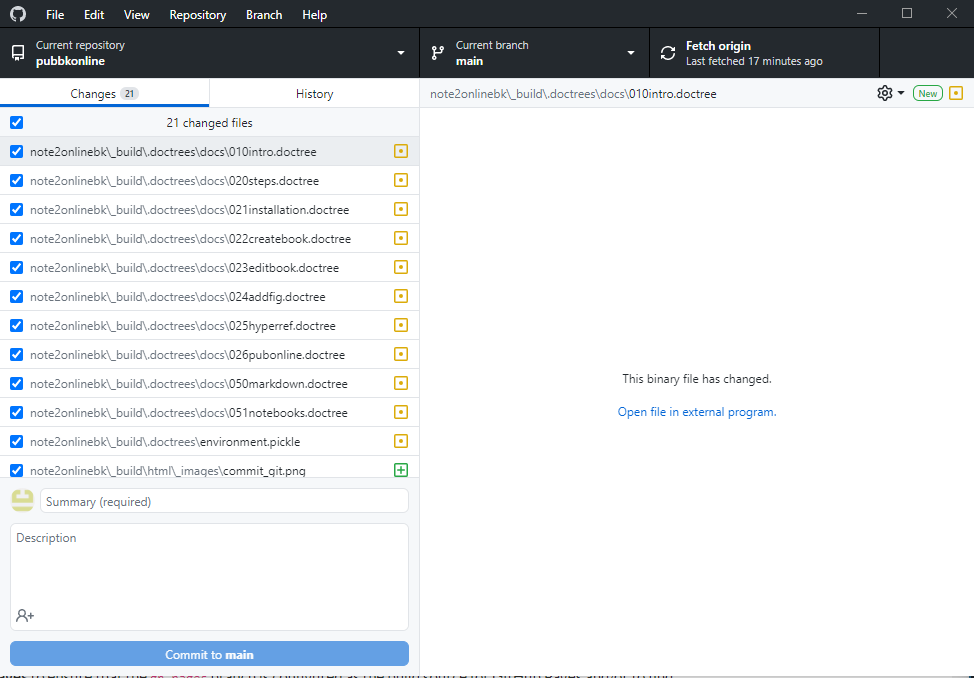

Publish your Book on Github¶
Register a Github account
Once registered. Create a new repository as shown (Figure 18).
For people who are not comfortable with CMD terminal. Download Github Desktop. The rest of the steps assumed you are using github desktop.
Clone the repository you just created onto your local computer as shown in Figure 19.
Fig. 19 Clone the repository from github using github desktop¶
Copy and paste your book folder into the local repository. Now on github desktop you will see all the changes. “Commit to main” and then “Push Origin”. You will see your repository populated with all your files.
Fig. 20 Commit and sync the files onto the github repository¶
Install ghp-import to compile and host your book on Github-pages. Go to your anaconda environment and activate your jupyterbook environment as shown here Installation. Once you activated the environment, execute this command.
pip install ghp-import
Go to the settings of your github repository. Turn on gh-pages, set your branch to gh-pages and folder to /root as shown in Figure 21.

Fig. 21 Turn on the gh-pages settings on your repository.¶
Once that is done. On your local computer, cd to your book folder (the folder should contain the _build directory) and execute the following command.
ghp-import -n -p -f _build/html

Fig. 22 Successfully executed ghp-import.¶
{kind=link}